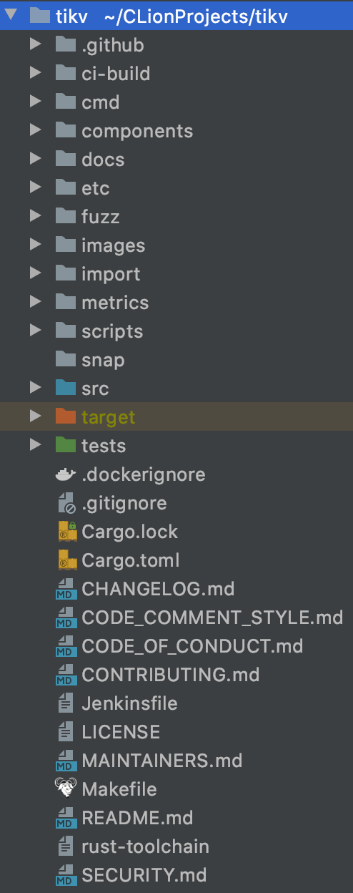

前言
今天我决定写一些为纯萌新准备的 tikv 源码阅读指南。
我知道已经有很多现有的 tikv 源码分析了，如 TiKV-源码解析系列和 deep dive tikv 系列，这些都是用于理解 tikv 源码的权威资料。这份资料的目的当然不在于替代它们。但是我认为因为以上这些文章都是由资深的 tikv contributor 所写，可能存在 “知识的诅咒”。至少对于我来说，这些文章并没有包含一些我想要知道的内容。
所以我在阅读 tikv 源码的过程中我写了这份资料。我希望这份资料对于希望对 tikv 作出贡献或是理解其代码的新手有所帮助。
然而，由于我也是纯萌新，我不能保证本书中没有错误，所以请以权威资料和代码为准。若您发现书中有任何错误，欢迎您联系作者。
srcVersion: b82e7e7eff678c2b5189facca08a7deb6bacc595
源码结构
从 官方GitHub地址 clone下一份tikv的源码，您会看到洋洋洒洒的一堆文件（夹）：

但是不要慌张，其中大部分都不是代码，而代码中很多都是不用特别去关心的小代码。
现将各个文件夹以及部分子文件夹的作用进行介绍。
cmd
如果你尝试过 build tikv，那你应该知道会产出两个二进制文件：实际的 tikv 服务器 tikv-server 和 用于控制 tikv 的 tikv-ctl。而这两个二进制文件的 main 就在这个 crate 里。
components
作为单独出来的 crate 的tikv的源码。至于为什么是这些部分被单独出来……我也不知道啊TAT。也许我该问问公司的前辈们。
backup
备份用组件。
batch-system
和 raft store 有关系，暂时看不透。
cdc
看不透。
codec
用于 encode、decode 数字等。
configuration
用来 “patch” 配置设置，这个子 crate 很好，可以用在你自己的 rust 项目中。
encryption
用于加解密。
engin, engin_*
单机的存储引擎。
externel storage
外部存储，似乎是一些和云存储相关的东西。
into_other
看不透，不过好像是个细节问题。
keys
对 key 的各种修饰。
log_wrappers
似乎是用来将没有实现 slog 接口的 log 系统 wrap 起来。
match templates
用来便捷地生成对多种 enum 的子类型的相似 match branch的代码的宏，这个子 crate 也很适合用在你自己的 rust 项目中。
panic hook
用于在测试等场景下防止打印出调用堆栈。
pd_client
用于链接 placement driver。
profiler
性能分析工具。
raft store
知道有这东西，但是看不透。
resolved_ts
看不透。
rusoto_util
似乎和安全有关，看不透。
security
SSL相关。
sst_importer
用于导入 RocksDB 的 SST 文件。应该是用于使用 lightning 高速导入数据的。
test_*
功能测试。
tidb_query_*
用于处理 tidb 下推的运算，包括向量化执行等等。
tikv_alloc
内存分配器，支持 tcmalloc、jemalloc 等。
tikv_util
不便归到其他类的工具代码。
tipb_helper
和 tidb 中的 protobuf 有关，暂时看不透。
txn_types
事务处理中使用的一些类型。
fuzz
模糊测试。
src
tikv 的主体代码部分。
coprocessor
处理 tidb 推下来的请求。
import
tidb-lightning 的支持。
server
对外服务的 server 代码。
storage
存储层，包括单机kv存储引擎、mvcc 及事务控制等。